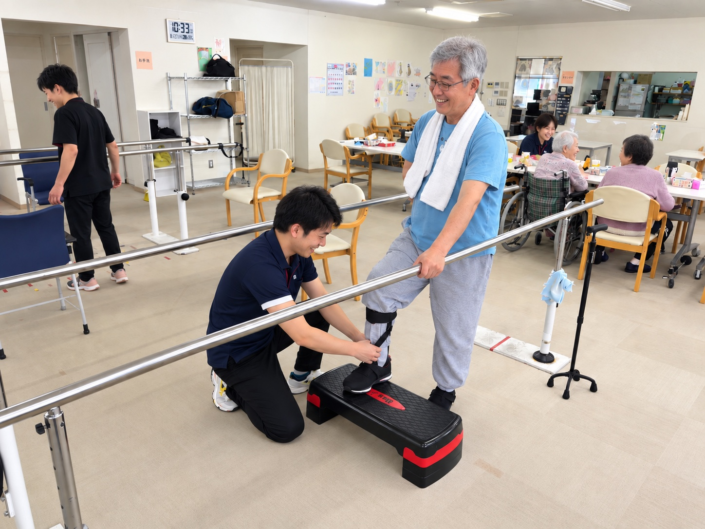
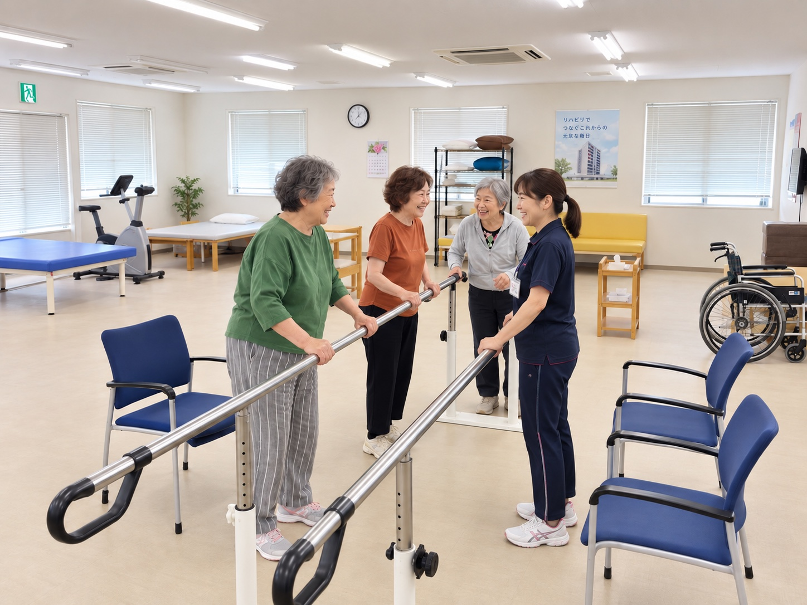
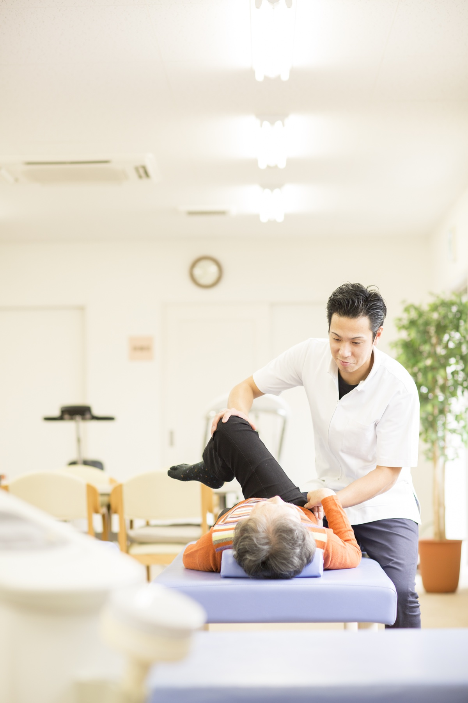
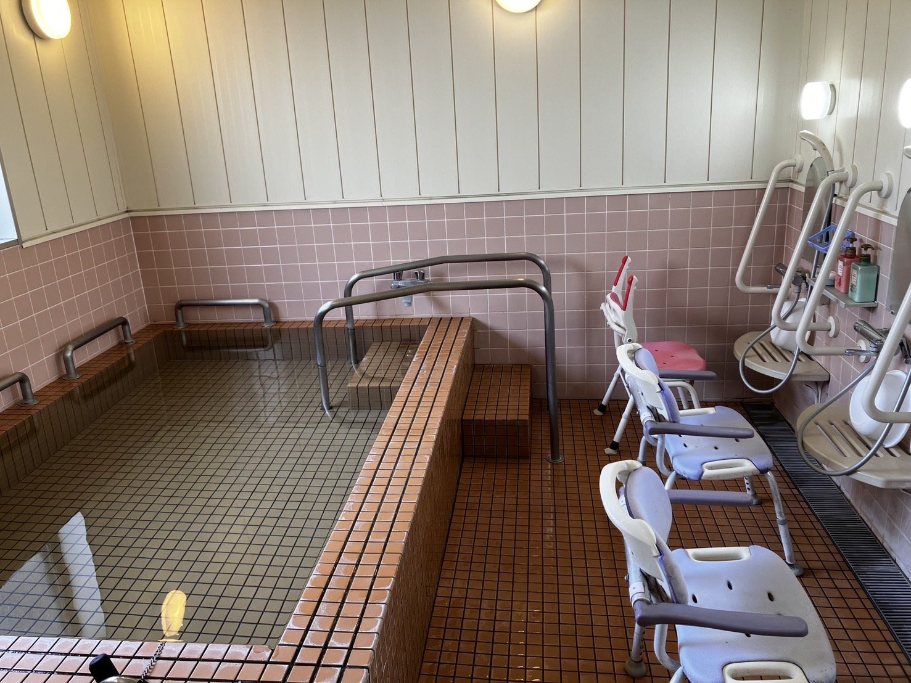
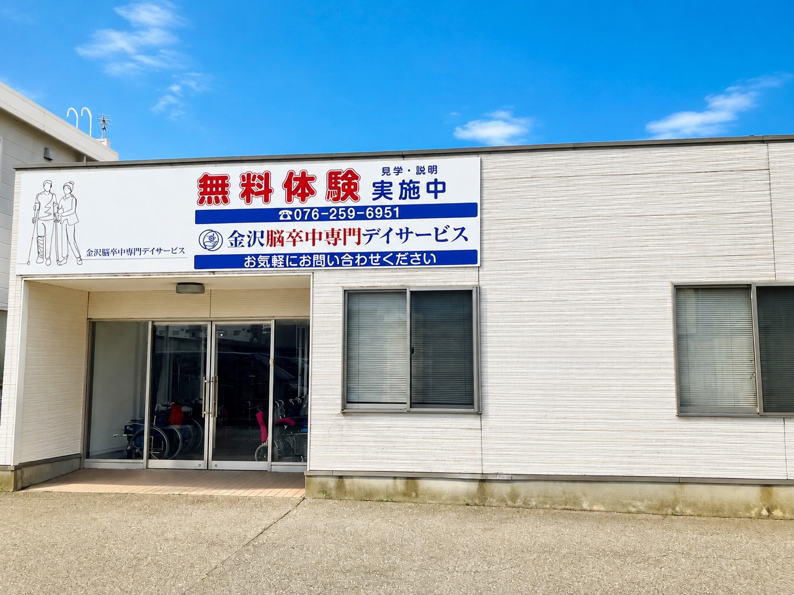

立ち上がる
いすや手すりを使い、姿勢と足の運びを確認します。
退院後もリハビリを続けたい。でも、一般的なデイサービスでは同じ脳卒中経験者に出会いにくい。ここは、同じ悩みを知る仲間と一緒に取り組めるデイサービスです。

イメージ写真訓練、仲間との時間、入浴設備、職員の様子を短い動画にまとめました。
再生ボタンを押すと動画が始まります。音量は再生画面で調整できます。
病院では、周りにも脳卒中後のリハビリに取り組む方がいます。ところが退院すると、同じ経験を持つ人と出会う機会は急に少なくなります。
一般的なデイサービスへ通っていても、自分と同じ悩みを持つ人が少なく、気持ちを分かち合いにくいことがあります。一人で続けるうちに、取り組む理由を見失うこともあります。
「自分だけではない」と思えることが、もう一度取り組むきっかけになります。

イメージ写真ここには、脳卒中後の生活と向き合っている方が多く通っておられます。麻痺や動かしにくさ、思うようにいかない気持ちを、長い説明をしなくても分かり合えることがあります。
隣で取り組む人の姿を見る。できたことを一緒に喜ぶ。そんな日々の関わりが、「今日もやってみよう」と思うきっかけになります。
人物が写る写真は、施設での過ごし方を伝えるためのイメージ写真です。
立つ、歩く、またぐ。日常生活で必要になる動きを、一つずつ確かめながら取り組みます。内容はその日の状態に応じて変わります。
いすや手すりを使い、姿勢と足の運びを確認します。
平行棒などを使い、その方に合う方法で歩行に取り組みます。
床の目印や段差を使い、生活の中で必要な動きを練習します。
同じ場所へ通い、仲間と一緒に繰り返す時間をつくります。

イメージ写真歩行や日常動作の練習だけでなく、ベッド上で体の動かしやすさを確かめるなど、職員がそばで支える場面もあります。
取り組む内容は、その日の体調や目標に合わせて調整します。気になる痛みや動かしにくさは、見学・体験時にお聞かせください。
施設での個別支援を伝えるためのイメージ写真です。

機能訓練だけでなく、入浴とご自宅までの送迎にも対応しています。通うために必要なことを、一日の中で組み合わせます。
サービス提供時間は9時20分から15時20分です。訓練や入浴の順番は、その日の状態に応じて変わります。
店舗が更新するスプレッドシートから、曜日ごとの施設とお風呂の空きを表示します。利用開始日は電話で最終確認をお願いします。
| 曜日 | 施設の空き | お風呂の空き |
|---|
2026年6月版の重要事項説明書を基に、利用区分・回数・負担割合から概算します。

| 事業所名 | 金沢脳卒中専門デイサービス |
|---|---|
| サービス | 通所介護・介護予防型通所サービス |
| 定員 | 30名 |
| 営業日 | 月曜日〜土曜日 |
| 営業時間 | 8:00〜17:00 |
| 提供時間 | 9:20〜15:20 |
| 通常の実施地域 | 金沢市・野々市市・白山市 |
| 所在地 | 石川県野々市市本町1丁目7-3 |
| 電話 | 076-259-6951 |
出典：2026年6月版 重要事項説明書・契約書
空き状況や受け入れ条件も、お電話で確認できます。